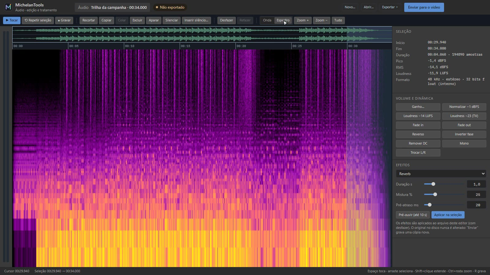
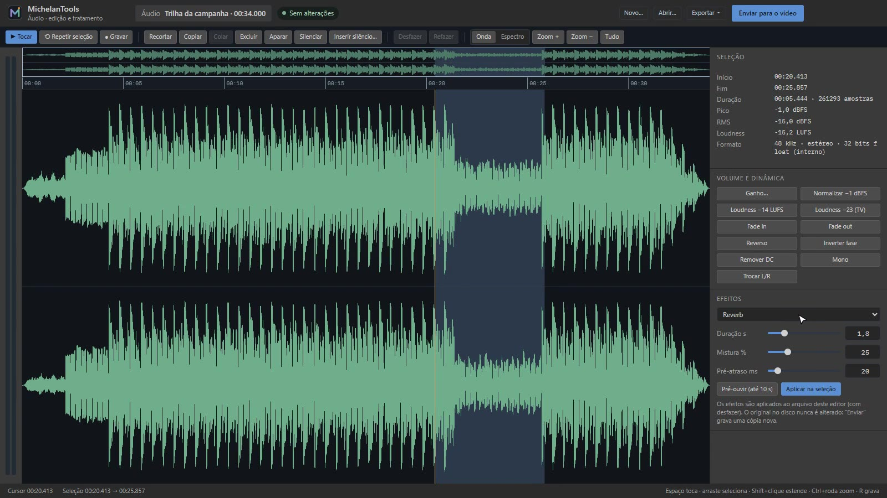
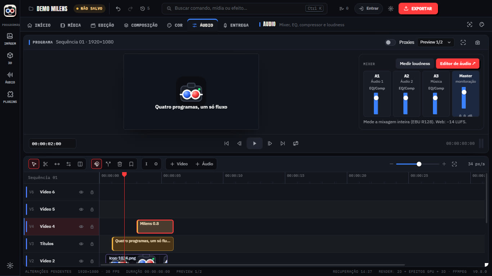

Veja o som, corte por amostra e limpe ruído no espectrograma. Equalizador, compressor, limitador e medição de loudness deixam a voz no volume certo para internet e TV, dentro do mesmo projeto.
Gravação real: seleção por arraste, reverb na seleção, fade de saída, espectrograma e loudness.
Ver o som
Onda e espectro na mesma tela
O espectrograma usa escala de frequência logarítmica e intensidade em dBFS, de −96 dB a 0 dB. Ruídos, cliques e zumbidos ficam visíveis antes de serem audíveis.
Edição exata
Cortar, copiar, colar, silenciar e inserir silêncio na amostra certa, com desfazer.
Medição
Pico, RMS e loudness integrado da seleção ou do arquivo inteiro.

Tratamento
Efeitos que você ouve antes de aplicar
Pré-ouça até 10 segundos com o efeito e aplique na seleção ou no arquivo todo. O original no disco nunca é alterado: “Enviar para o vídeo” grava uma cópia nova.
Dinâmica
Compressor, limitador e gate de ruído.
Espaço e cor
Equalizador de 3 bandas com cortes, reverb e eco.
Limpeza
Redução de ruído espectral a partir de um trecho só com ruído, e remoção de DC.
Formatos
Abre e exporta WAV, FLAC, MP3, AAC e Opus. Grava direto do microfone.

Na timeline
Mixer na página Áudio do vídeo
Cada trilha tem EQ, compressor e medidor de loudness. O assistente local remove silêncios e normaliza diálogos sem enviar nada para fora.

Ainda não tem
Gravação longa em streaming (hoje a gravação fica na memória)